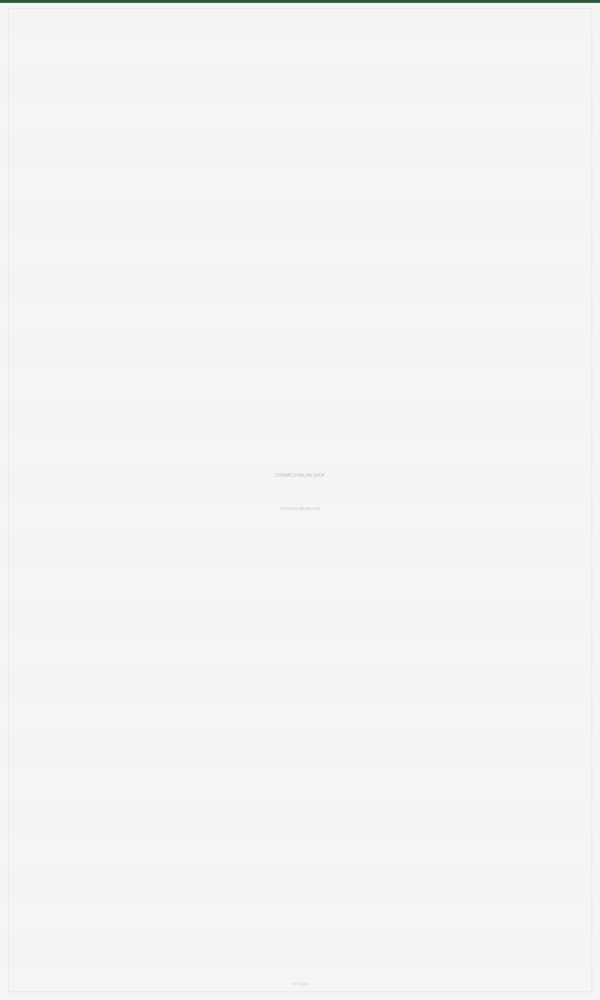
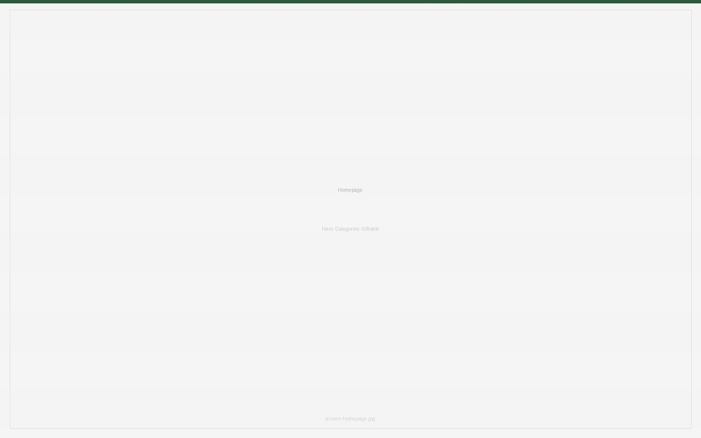
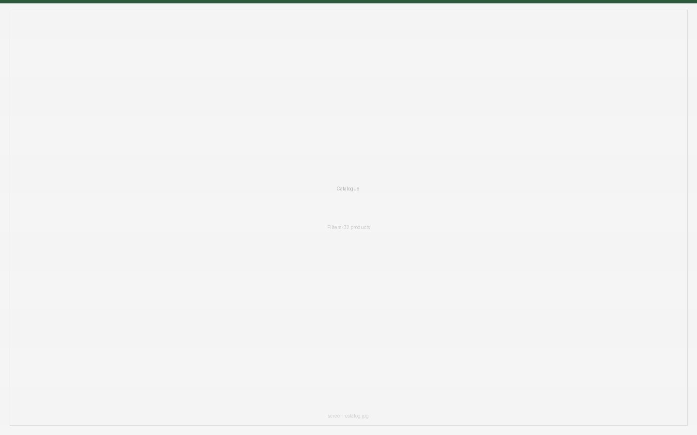
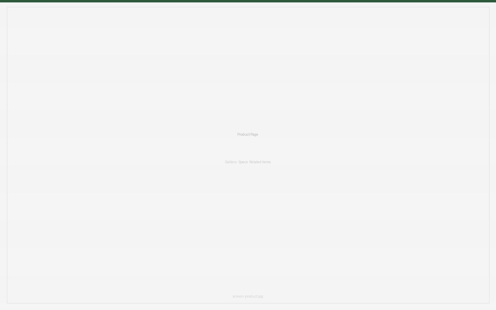
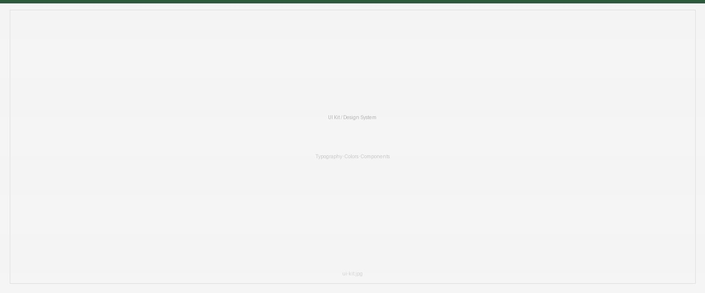

CERAMICS ONLINE SHOP
A full UX/UI project for Hlyniana Maysternia — a fictional handmade ceramics brand based in Kyiv. The goal: design an e-commerce experience that reflects the craft, warmth and uniqueness of handmade objects — and makes it easy to find, fall in love with, and buy them.

RESEARCH
Before opening Figma I spent time understanding who actually buys handmade ceramics — and why. I identified three distinct user types with very different motivations:
Daryna Shevchuk
Brand Designer · 28 · Kyiv
— HOME AESTHETICS BUYER
"I don't just buy a cup — I buy the atmosphere of my home."
Artem Hnatiuk
Marketing Manager · 26 · Lviv
— SOCIAL GIFT BUYER
"I want a gift that looks like I really put in the effort."
Solomiia Boiko
Content Creator · 23 · Odesa
— CONTENT CREATOR
"My ceramics are part of my content and my lifestyle."
KEY UX INSIGHTS
- Users can't judge texture, size or colour accuracy from standard photos
- Gift buyers need curated ready-made sets, not a full catalogue to browse
- Content creators need multiple photo angles and lifestyle context



DESIGN SYSTEM
Built a full UI kit before designing screens: typography scale using Huninn and Outfit, colour palette based on deep green and warm neutrals, button states, card components, filters, navigation — all documented and reusable.

WHAT I BUILT?
- Homepage with hero, categories, gift sets, popular products, about the maker
- Catalogue with filters by category, price, availability and material
- Product page with photo gallery, full specs, related items
- Cart and checkout flow
- 404 page: "This page broke like a clay pot"
- Full mobile version
WHAT I LEARNED?
This project showed me the real difference between designing by feeling and designing by research. Every decision was backed by something a real user told me through the personas and journey maps. That's the shift I want to carry into every project going forward.